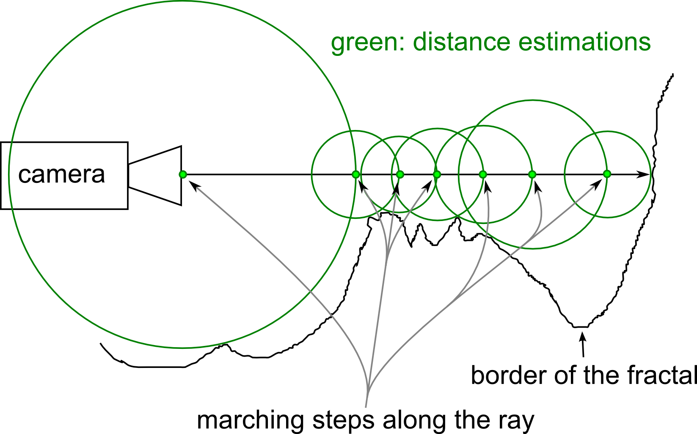

1
Introduction to WebGL
Karalias Nikolaos

WebGL is a low level rasterization API that enables the display of realtime 3D graphics on a web browser. It offers a fully programmmable graphics pipeline. Its syntax is based on OpenGL ES 2.0 and it supports hardware acceleration.
WebGL uses javascript for the "core" development. This is made possible by the canvas element in modern HTML. The shaders are written in GLSL, a high level shading language.

Main tasks
- Set up WebGL context in canvas
- Set up shaders, buffers, attributes, and uniforms
- Write javascript skeleton
- Pass uniforms and vertex attributes to shaders
A simple vertex shader
attribute vec3 aVertexPosition;
uniform mat4 uMVMatrix;
uniform mat4 uPMatrix;
varying vec3 position;
void main(void) {
gl_Position = uPMatrix * uMVMatrix * vec4(aVertexPosition, 1.0);
position= aVertexPosition;
}
Values are passed from the vertex to the fragment shader as varying variables. The value corresponding to each fragment is calculated via interpolation. So in our example of the variable position, the position values for fragments that are between two vertices are linearly interpolated from the vertex positions.
A simple fragment shader
precision mediump float;
varying vec3 position;
void main(void) {
gl_FragColor = vec4(1.0, 1.0, 1.0, 1.0);
}
Main function
function webGLStart() {
var canvas = document.getElementById("mycanvas");
initGL(canvas);
initShaders();
gl.clearColor(0.0, 0.0, 0.0, 1.0);
gl.enable(gl.DEPTH_TEST);
initbuffers();
initTexture();
drawScene();
}
Writing the javascript skeleton can be done with the help of math libraries such as gl-Matrix. This can simplify calculations for vertex normals, projection matrices, etc.
Main animation loop
function drawScene() {
gl.viewport(0, 0, gl.viewportWidth, gl.viewportHeight);
gl.clear(gl.COLOR_BUFFER_BIT | gl.DEPTH_BUFFER_BIT);
mat4.ortho(pMatrix,-1.,1.,-1.,1.,-1.,1.);
mat4.identity(mvMatrix);
quadBuffer(); //specifies 4 vertex positions and buffers them
setMatrixUniforms();
gl.drawArrays(gl.TRIANGLE_STRIP, 0, vertexPositionBuffer.numItems);
requestAnimationFrame(drawScene);
}
All the relevant information about the geometry(vertex positions, normals, colors, texture coordinates) are passed on to the shaders through buffers.
Passing the vertex positions
vertexPositionBuffer.itemSize = 3;
vertexPositionBuffer.numItems = 4;
gl.bindBuffer(gl.ARRAY_BUFFER, vertexPositionBuffer);
gl.bufferData(gl.ARRAY_BUFFER, new Float32Array(vertices), gl.STATIC_DRAW);
gl.vertexAttribPointer(shaderProgram.vertexPositionAttribute,
vertexPositionBuffer.itemSize, gl.FLOAT, false, 0, 0);
One of the main advantages of the programmable pipeline is the flexiblity it provides the developer. While lighting computations can be carried out on a per vertex basis and the colors interpolated per fragment, it is also possible to calculate the lighting per pixel on the fragment shader. This can result in a more realistically illuminated scene. However, this can also increase the computational cost.
So, how did you make these mountains in the background?
Again, the power of the fragment shader comes into play. These mountains(and much more) can be achieved through a technique called raymarching. It is method of creating procedural graphics.
The only geometry required for this complex landscape is a quad. All the calculations are carried out on the fragment shader.
See:
In fact, this approach makes it possible to render surfaces without an analytical intersection routine as a standard raytracing algorithm would require. That is achieved through what is called distance field rendering. The surfaces can be anything from simple models like boxes and spheres, to more complex structures like fractals.

The goal is to estimate a lower bound of the distance to the closest surface at every step of the marching ray.
Various distance functions are used for that purpose. Furthermore, several operations can be defined
on the surfaces such as deformations, repetitions, combinations, etc. All of the above constitute important tools sufficient for procedural modeling.
Main raymarching loop
vec3 rayMarch(vec3 pos,vec3 rayDir,float EPSILON,out vec2 dist){
float mini=999999.0;
for (int i = 0; i < 120; i++) {
if ((dist.x < EPSILON)) continue;
dist = distfunc(pos); //distance function
pos += dist.x * rayDir;
if(dist.x < mini) mini=dist.x;
}
return pos;
}
The scene animated in the background is another example of a fully procedural scene. Apart from the geometry, it is also possible to achieve effects like soft shadows and antialiasing.
For more on distance fields, raymarching and procedural graphics in general, Inigo Quilez's website is highly recommended.
Special thanks to George Tz/Leriaz for helping me out with the web coding part of this presentation.